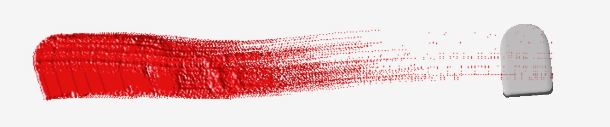
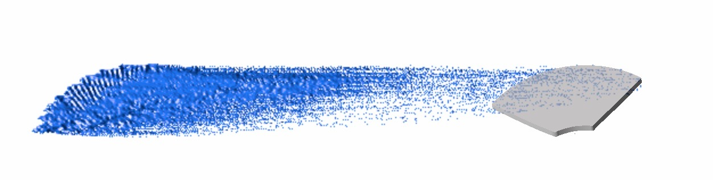
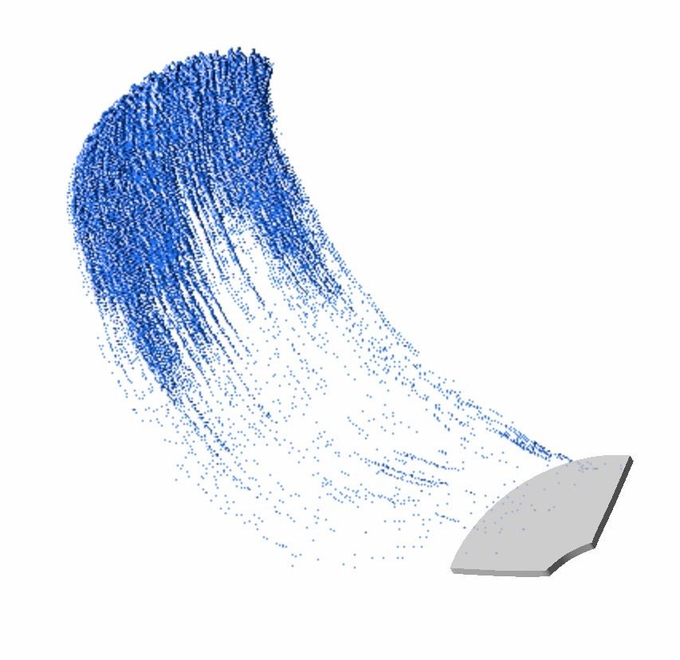
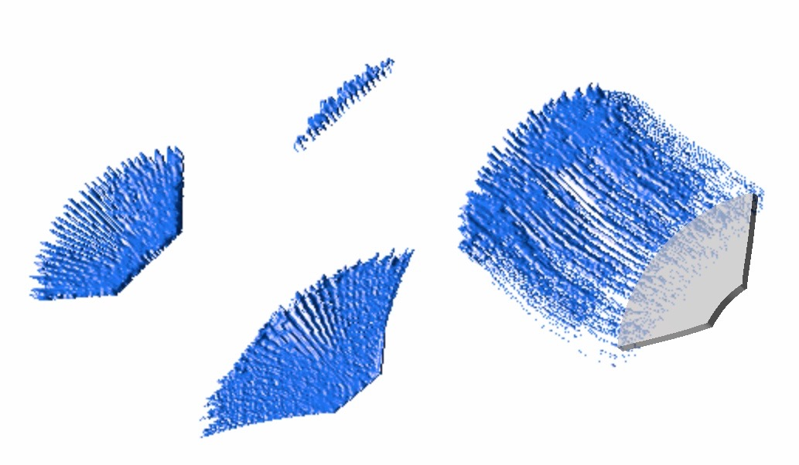
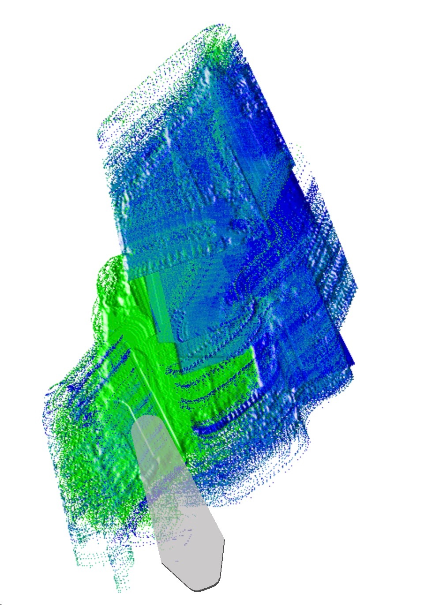
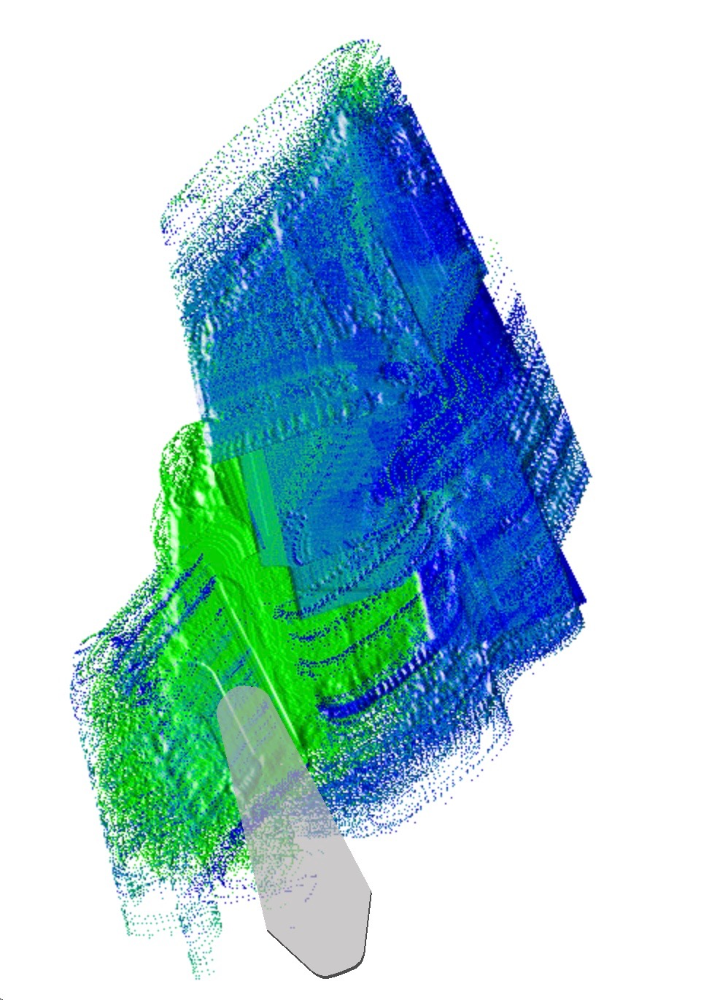
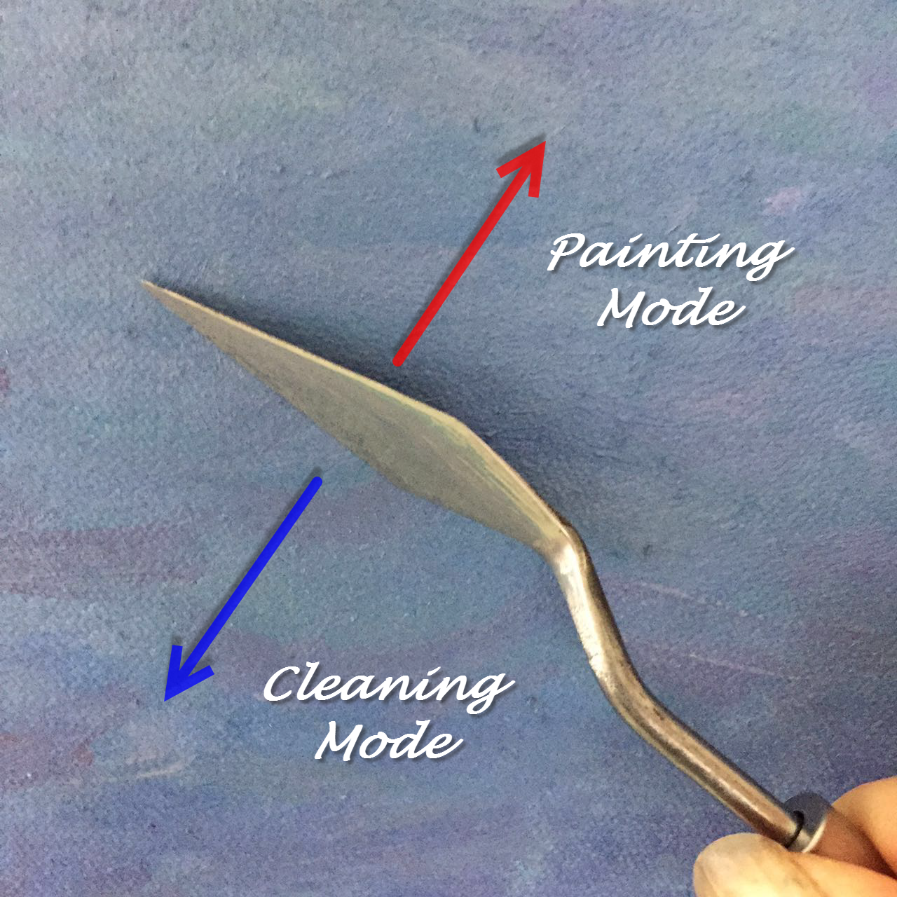

控制颜料的厚度。压力越大，获得的图层就越薄。相反的，画板对画笔的毛刷的压力就很小了。
下面是画笔的屏幕截图，显示压力对笔触纹理的影响。
| 圆头笔 |  |
| 平头笔 |  |
| 扇形笔 |  |
绘画工具是用来油画创作的基础工具，我们的产品支持绝大部分的油画工具，如画笔，画刀等。
在绘画过程中，画笔的状态可能有以下三种：清洁，使用，固定模式
| 状态 | 描述 | 状态转变 |
|---|---|---|
| 清洁 | 没有蘸取颜料或选择模式 |
画笔将在蘸取颜料或选择模式后转变为使用状态 如果自动重置功能是打开的，画笔清洁功能将会将笔的模式销毁，重置为清洁状态，这样的话，跟设置自动清洁是一样的。 |
| 使用 | 蘸取颜料到绘画中使用或选取固定模式到绘画中使用的画笔状态。 |
使用中的画笔，自始至终都是这个状态，只有通过画笔清洁或者是自动重置功能来使之变为清洁状态。 如果自动重置功能是关闭的，在绘制过程中，画笔将一直保持使用的状态。 如果自动重置功能是打开的，在每一次绘画完成之后，画笔将自动重置为绘画之前的状态。 注意：画笔中蘸取的颜料在每一次的绘制过程中都会被消耗，这点与现实创作中是类似的。 |
| 固定模式 | 选择了固定的模式（保存不同的颜料，厚度等，如混色后的模式） |
固定的模式可以在绘制过程中通过自动重置一次又一次的重复使用。 固定模式的状态能通过画笔清洁功能返回到清洁状态。
|
颜料管是一个极简单的工具，它负责提供一些液体的颜料，我们只能通过Apple Pencil感知的压力判断提供颜料管提供的颜料的多少，其他的角度和方位等对颜料管是无用的。
当然，自动重置和自动清洁队颜料管也是无用的。
刷子是油画创作中的常用工具，根据不同的形状，我们可以分为圆头刷，扇形刷，平头刷等。
相对于画刀来说，刷子的特点也很明显，有效的纹路，柔软的质感等等。在我们的产品中，不论是画刀还是刷子，我们都在极大程度的模拟现实油画中各种画笔对于颜料的厚度，用力大小等不同方面的效果。
| Apple Pencil | 画笔描述 | ||||||
|---|---|---|---|---|---|---|---|
| 压力 |
控制颜料的厚度。压力越大，获得的图层就越薄。相反的，画板对画笔的毛刷的压力就很小了。 下面是画笔的屏幕截图，显示压力对笔触纹理的影响。
|
||||||
| 高度 | 控制画笔的垂直度。 | ||||||
| 方位 | 控制画笔的绘画方向。 |
画笔头的方向可以通过用Apple Pencil控制操纵杆上的轴来旋转。
平头笔用于制造宽阔、拖扫式的笔触；可用平头侧边画出粗糙的线条；转动笔身进行拖扫式用笔，可出现粗细不均的笔触。
| 描述 | 抓屏 |
|---|---|
|
方位 ~ 0° 高度 ~ 30 |
 |
|
方位 ~ 90° 高度 ~ 30 |
 |
|
方位 ~ 70° 高度 ~ 30 |
 |
|
方位 ~ 70° 高度 ~ 30 |
 |
| 不同的角度和压力 |  |
圆头笔和平头笔很像，笔头是圆的，兼有圆头、扁平两种画笔的特性，在表现曲线状的笔触时，它是一种更优雅、更流畅的画笔。
| 描述 | 抓屏 |
|---|---|
|
方位 ~ 0° 高度 ~ 30 |
 |
|
方位 ~ -90° 高度 ~ 30 |
 |
|
方位 ~ 70° 高度 ~ 60 |
 |
|
方位 ~ -90° 高度 ~ 30 |
 |
|
方位 ~ -90° 高度 ~ 30 |
 |
| 不同的角度和压力 |  |
扇形笔笔毛稀疏，呈扁平的扇状。用于湿画法中的轻扫与刷，或柔化过于分明的轮廓。喜欢薄画法的画家常使用这种画笔。
| 描述 | 抓屏 |
|---|---|
|
方位 ~ 0° 高度 ~ 30 |
 |
|
方位 ~ -60° 高度 ~ 30 |
 |
|
方位 ~ -90° 高度 ~ 30 |
 |
|
方位 ~ -90° 高度 ~ 30 |
 |
| 不同的角度和压力 |

|
用画刀作画和画笔作画的感觉是完全不同的，画刀能达到用画笔难以达到的效果。我们的APP更是很好的利用了这一点，并且在厚涂，刮色等方面很好的模拟了实际画刀的特点。当然了，不同形状的画刀，画出的效果也截然不同。
毫无疑问地说，画刀是艺术家们使用最多的绘画工具之一。

 


在我们的工具中，画刀也能够通过Apple Pencil来很好的控制：
| Apple Pencil | 画刀描述 |
|---|---|
| 压力 |
控制颜料的厚度。压力越大，画板上获得的图层就越薄。画刀的压力不收画刀的大小和形式的影响。 |
| 高度 |
控制刀的垂直方向的角度。当高度角小于30°时，画刀完全放置在表面上。这个角度可通过Apple Pencil控制在30°和90°之间。 |
| 方位 | 在绘画过程中控制画刀的方向。 |
画刀轴上的旋转能够提供很多功能。不幸的是，Apple Pencil还不支持这些。与画笔相同，画刀的旋转由Joystick来控制。
一般来说，画刀在绘画中有两个角色：混合颜色和去除颜色。这取决于画刀的方向，方向和旋转。
当画刀旋转时，即画刀与颜料表面成角度，沿着画刀的运动方向就会有不同的绘画效果。画刀向角度小于90°的方向移动时，处于混合模式，称为前向绘画；当它向相反方向（角度大于90°）移动时，这是一种清洁模式，称为“后向绘画”。在这种模式下，表面上的颜料会减少。

在下面的屏幕截图中，画刀的旋转是45°。向左移动是清洁，向右移动的是正常的绘画模式。

在清洁模式下，当画刀方向接近90°或旋转接近90°或-90°时，会产生透明薄涂效果，而且这种效果跟压力息息相关。
| 模式≈ | 描述 |
|---|---|
|
高度 ~ 90° 旋转 ~ 0° |
|
|
高度 ~ 30° 旋转 ~ 90° |
|
|
高度 ~ 30° 旋转 ~ 90° |
|
一般来说，当我们画的比较慢的时候，我们可以选取现有的颜料。但有时候，我们需要从一些已经画过的颜料表层去选择颜料，这也是我们增加调色板的主要目的。这里我们提供了一个手势来满足完成这个功能，这个手势包括以下步骤：
就像点击屏幕一样，但是要尽可能快的拿起画刀
此工具用于在绘画过程中选择颜料，它能很好的模拟在实际创作中给画笔，画刀蘸取颜料的过程。
| 画图工具 | 描述 |
|---|---|
| 颜料管 |
选择当前颜色的颜料管 颜料的多少与Apple Pencil的压力无关，默认是无限多的颜料。 |
| 画刀 |
给当前的画刀蘸取颜料 颜料蘸取的多少与Apple Pencil的压力相关，压力越大，蘸取的颜料越多。 |
| 画笔 |
给当前的画笔蘸取颜料 颜料蘸取的多少与Apple Pencil的压力相关，压力越大，蘸取的颜料越多。 |
当您使用颜色选择器时，当前的绘图工具将被禁用，它将在选择操作结束后启用。
所选的颜色是纯粹的颜色，没有3D显示引擎的光影影响。
该工具使用拾取手势选择一种颜色模式。当前的绘画工具在颜色模式拾取之前变干净。
| 画图工具 | 描述 |
|---|---|
| 画刀 |
给当前的画刀选取一个颜色模式 颜色模式的质量和效果与Apple Pencil的压力相关。 |
| 画笔 |
给当前的画笔选取一个颜色模式 颜色模式的质量和效果与Apple Pencil的压力相关。 |